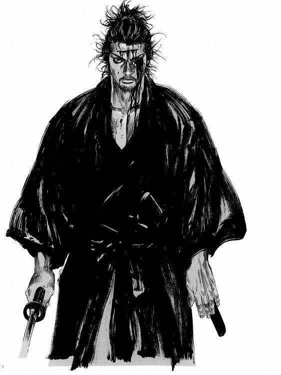

Sobre Mi
Hola, soy un desarrollador web básico con experiencia en HTML, CSS y JavaScript. Me apasiona crear sitios web atractivos y funcionales. Estoy emocionado de compartir mi portafolio contigo.
¿Que estudio?
Actualmente me encuentro cursando la tecnologia de Analisis y desarrollo de software.
Mis metas
Mi objetivo es convertirme en un desarrollador web completo, capaz de crear aplicaciones web modernas y eficientes. Estoy comprometido a seguir aprendiendo y mejorando mis habilidades para alcanzar este objetivo.
Mis intereses
Ademas de la programacion, me encanta la inteligencia artificial, el diseño de interfaces y el desarrollo de aplicaciones móviles. Tambien me gusta investigar nuevas tecnologias y aprender continuamente.